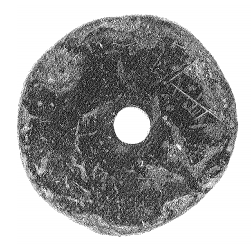
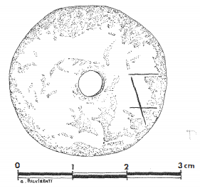

-
HTZg163
Names
HTZg163, HT Zg 163
Support
Stone object
Location
Haghia Triada
Findspot
Unavailable


Scribe
Unavailable
Context
Late Minoan IB
1500-1450 BCE
Dimensions
Catalogue
Readings
1 1 0 ¹⁄₈ none
𐝄
¹⁄₈
𐝄
¹⁄₈
HT Zg 163
(HTR 1716; Militello
1989; Perna 2003: 346, pl.
LXVIIIi), pierced stone weight (MM IIIB-LM IA
context), weighing 8.40 gr (Militello 1988-1989; Schoep 2002: 35;
thanks to Brent Davis).
F
Presumably the fraction [1/8] refers to
the weight of the stone weight, 8.40 gr; if this is 1/8, the unit would
be 67.2 gr, which is very close to Petruso's unit of 61 gr (derived from
actual balance weights: Petruso 1992: 63) or 2.5 Q (in the Mycenaean
system; Q = 3.36 gr).
References